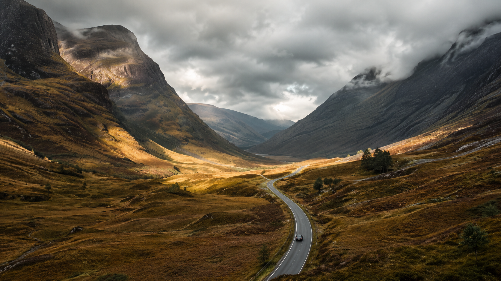

01 / HIGHLANDS
EN PERSONLIG EXPEDITION GENOM SKOTTLAND
Där vägen slutar
Där vägen slutar
börjar resan.
Från Loch Lomond till Yttre Hebriderna. Två färjor, tretton dagar och en roadbook byggd för vägen framför dig.
13DAGAR